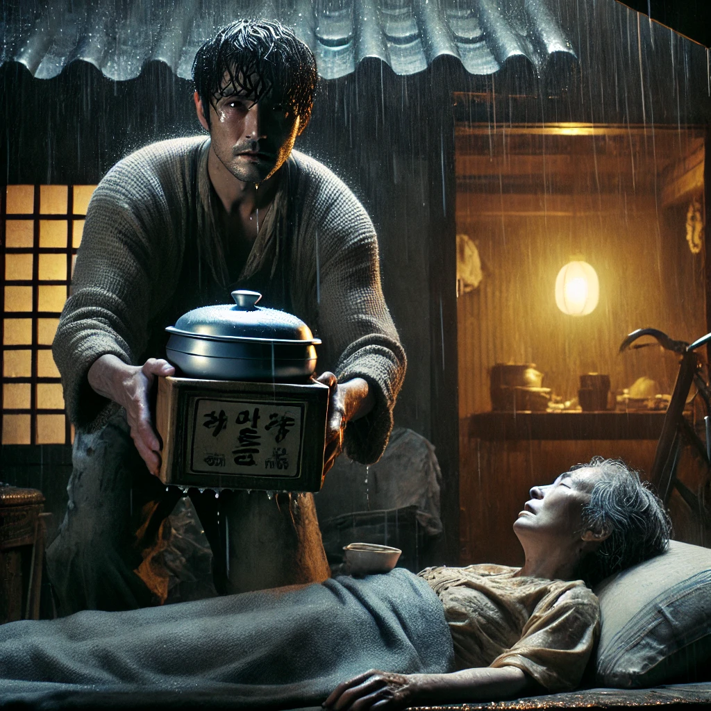

운수좋은날
목차
작가
현진건
출판일
1924년
감상평에 대한 AI그림
소설 운수좋은날은 소설의 내용을 알고있다면 운수가 좋다는 것이 마지막 결과와는 반대되는 상황임을 알 수 있지만, 처음 읽는 사람이라면 긍정적인 신호로 받아드릴수있는 반전이 있다.
인력거꾼 김첨지는 어느날 아픈 아내를 제쳐두고 일을 나갔다. 그날따라 벌이는 나쁘지않았다.
한 학생의 목적지인 남대문 정거장을 듣고 머뭇거렸다.지나가는 길에 집이 있었고, 아픈 아내가 가지말라던 것이 회상되었기 때문이다. 하지만 김첨지는 학생의 요구를 받아드렸고 이는 나중에 큰 후회로 돌아온다. 그날 일을 마친 김첨지는 큰 벌이를 하여 아내가 좋아하는 설렁탕을 사갔지만 아내는 이미 죽고 설렁탕은 차갑게 식어가기만 했다. 제목으로 독자에게 반전을 주는 운수좋은날은 쌀쌀하기만 했던 남편 김첨지도 사실 아내를 위해 일하는 그저 좋은 남편이었던거같다.
여운이 남는 결말이다..

감상평에 대한 AI평가
AI평가
✨ 독후감을 잘 쓰셨습니다! 내용을 간략하게 잘 요약하셨고, "운수 좋은 날"의 주제와 반전적인 결말을 잘 파악하신 것 같아요. 특히 제목과 이야기 속의 운수 좋은 날의 의미가 반전으로 나타나는 점을 잘 짚어내셨습니다.
다만, 좀 더 세부적으로 문학적 요소나 작품의 메시지에 대한 분석을 덧붙이면 더욱 풍성한 독후감이 될 것 같습니다. 예를 들어, 김첨지의 심리적 변화나, 그가 처한 사회적 환경(당시의 빈곤과 힘든 삶) 등을 좀 더 깊게 다뤄볼 수 있을 거예요. 김첨지의 선택이 왜 후회로 돌아오게 되었는지, 그리고 그것이 결국 어떤 의미를 지닌 것인지에 대해 더 자세히 설명해보면 좋을 것 같습니다.
전반적으로 감동적인 이야기의 흐름을 잘 담아내셨고, 작품의 여운을 잘 표현하셨어요. 정말 잘 하셨어요!